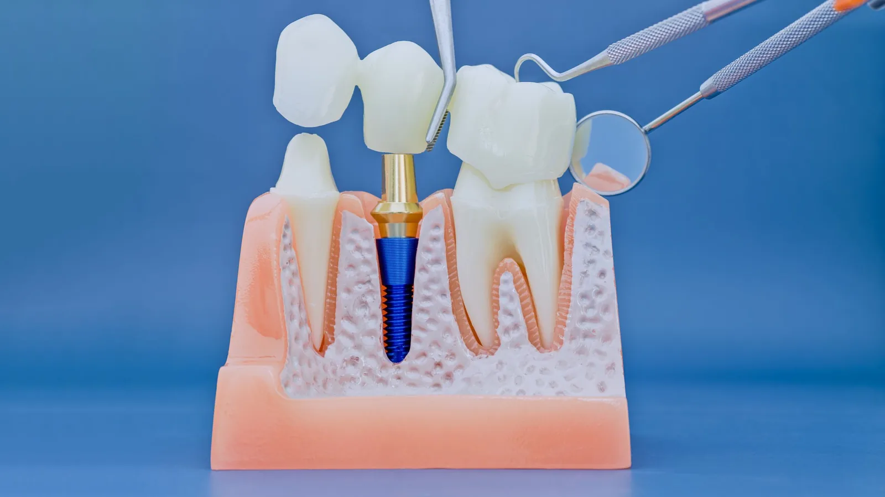

Restorative Dentistry
Filling a gap with something that stays put.
A bridge replaces a missing tooth by anchoring a replacement to the teeth on either side of the gap. Those neighbouring teeth are crowned, and the replacement tooth is joined to them, so the whole thing is fixed in place and cannot be taken out.
For the right situation it is a good solution. It restores chewing, stops the neighbouring teeth drifting into the gap, and does not involve surgery or the months of healing that an implant requires.

When a bridge is the right choice, and when it is not
A bridge relies on the teeth either side. Where those teeth already carry large fillings or crowns, using them as supports makes good sense, because they were going to need covering anyway.
Where the neighbouring teeth are sound and untouched, that calculation changes. Preparing a healthy tooth for a bridge means permanently removing enamel from a tooth that had nothing wrong with it. In that situation an implant is often the more conservative option, because it replaces the missing tooth without involving its neighbours at all.
Dr Meg will lay out both options honestly, including the cost difference, the time involved and the likely lifespan of each, and let you decide. She places and restores implants herself, so there is no incentive here to steer you either way.
Bone loss under the gap, gum health and the size of the gap all affect what is possible.
What is involved
At the first appointment the supporting teeth are prepared under local anaesthetic, a digital scan is taken, and the shade is matched. A temporary bridge is fitted so the gap is not visible while the laboratory works.
At the second appointment the bridge is tried in, checked for fit, contact and bite, then cemented. As with a crown, the bite adjustment is done carefully — a bridge that loads unevenly puts strain on the supporting teeth.
Cleaning under a bridge
This is the part that determines how long a bridge lasts. You cannot floss between the units the ordinary way, because they are joined. Cleaning underneath the replacement tooth requires a floss threader, superfloss or an interdental brush, and it needs doing daily.
Bridges usually fail not because the porcelain breaks but because decay or gum disease develops in a supporting tooth that has not been cleaned properly underneath. We will show you the technique and check it at every visit.
Frequently asked questions
It depends on the health of the supporting teeth, your bite, whether you grind, and above all how well you clean underneath it. Bridges are durable but not permanent, and no dentist can put a figure on an individual case.
Neither is better in the abstract. An implant avoids touching the neighbouring teeth and is often preferable where those teeth are healthy. A bridge avoids surgery, is quicker, and makes good sense where the neighbours need crowning anyway. Dr Meg will go through both with you.
It should. The bridge is made by a technician and shade-matched to your surrounding teeth. Where the gum has receded under the gap, the replacement tooth is contoured to sit against the tissue naturally.
No. Because it is fixed, it functions much like your own teeth. There is usually a short adjustment period.
It depends on the span and the strength of the supporting teeth. Longer spans place more load on the supports, and beyond a certain point a bridge is not advisable. That is assessed individually.
Preparation is done under local anaesthetic. Some tenderness in the gums afterwards is normal. No dentist can promise a completely pain-free appointment, but most people find it comparable to having a crown done.